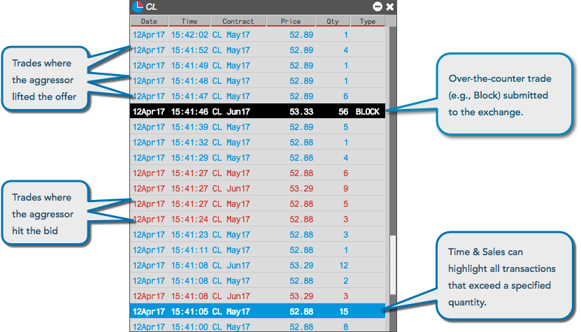
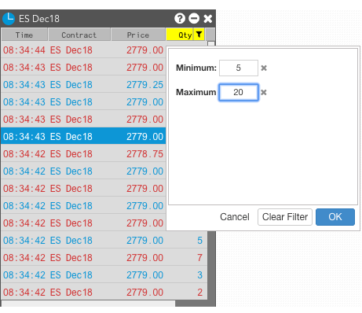

The Time & Sales widget displays all real-time and historical trades that occur for selected instruments and provides details for each trade including date, time, price, and quantity. Each trade is color-coded to indicate whether the trade was a result of an aggressive buyer or seller. You can configure each Time & Sales widget to display one or more instruments on one or more exchanges, and you can specify quantities to only display and highlight trades of a minimum size.

The Time & Sales widget keeps a running record of trades for selected instruments displayed in reverse chronological order.
Note: Users can access historical Time & Sales data by scrolling to the bottom of the widget screen. The Time & Sales widget on TT maintains and displays a history of trade data from all of your sessions and not just for the current session.
The Price and Qty column filters give you the ability to display only trades with prices or quantities that meet minimum and/or maximum values. For example, you can configure Time & Sales to show only trades with quantities between 5 and 20.

Note: Filter the widget by "Contract" before applying a filter to the Price column.